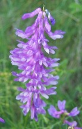
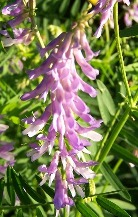
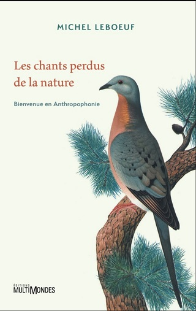

Couleurs et parfum des fleurs
Cliquer sur une couleur
La couleur n'est pas en botanique scientifique un critère reconnu.
En effet, elle peut varier en fonction de l'altitude à laquelle pousse une même espèce de fleur et, durant la nuit, les fleurs sont toutes grises, leur feuillage est sombre et de couleurs noires, brunes, violacées ou bleutées. En plein jour, il peut arriver de voir des fleurs albinos ou tout simplement hypochromes, comme cette Medicago sativa habituellement violette.
Perçue différemment selon les individus qui n'ont pas tous la même rétine ni la même sensibilité à son grain et à sa texture, affichée différemment selon les écrans d'ordinateur, la couleur des corolles des fleurs, comme l'avait déjà remarqué Linné, change également en fonction du niveau d'acidité des sols, et de plusieurs autres facteurs parmi lesquels l'ombre et la lumière
 
Cliquer sur l'une ou l'autre de ces images
tout en conservant son rôle essentiel : attirer des insectes qui d'ailleurs ne perçoivent pas la couleur comme nous avec leurs yeux aux milliers de facettes, les fleurs leur offrant des marques ultraviolettes que nous ne voyons pas, et qui, après avoir butiné, peuvent transporter le pollen des fleurs mâles aux fleurs femelles.
La couleur ne fait pas l'espèce... pas plus que l'odeur d'ailleurs.
Mais c'est une aide pour débuter en Botanique même si elle n'est qu'une réalité virtuelle puisque perçue différemment par ses observateurs dont les yeux et le cerveau n'ont rien d'uniformes, la vision animale n'étant pas celle des humains. Aidez-vous en cliquant sur une couleur ci-dessous par exemple.
La Couleur Des Fleurs, Yvon Étienne
La vue et l'ouïe humaines, ces deux sens valorisés par la culture médiévale parce qu'ils « fonctionnent » de loin, seraient-ils en voie de disparition ? L'épidémie mondiale de myopie s'accompagnerait-elle d'une épidémie mondiale de surdité, raisons pour lesquelles la Nature est désormais condamnée à s'effacer et même à disparaître, Anthropophonie oblige ?

Parfum des fleurs
Linné qui savait qu'odorum infinitae sunt varietates (il existe une infinie variété d'odeurs) puisqu'il les avait classées, écrivit cependant odor speciem nunquam clare distinguit (l'odeur ne distingue jamais clairement une espèce) quand bien même elle permet de distinguer clairement les parfums créés par les êtres humains et qu'elle est un des moyens d'en détecter une contrefaçon ou un dupe lorsqu'elle est trop forte, trop faible ou tout simplement mauvaise.
L'histoire de la parfumerie française